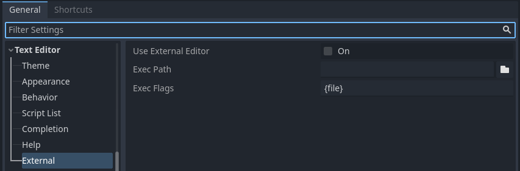

Using an external text editor
This page explains how to code using an external text editor.
Note
To code C# in an external editor, see the C# guide to configure an external editor.
Godot can be used with an external text editor, such as Sublime Text or Visual Studio Code. Browse to the relevant editor settings: Editor > Editor Settings > Text Editor > External

Text Editor > External section of the Editor Settings
There are two text fields: the executable path and command-line flags. The flags allow you to integrate the editor with Godot, passing it the file path to open and other relevant arguments. Godot will replace the following placeholders in the flags string:
Field in Exec Flags |
Is replaced with |
|---|---|
|
The absolute path to the project directory |
|
The absolute path to the file |
|
The column number of the error |
|
The line number of the error |
Some example Exec Flags for various editors include:
Editor |
Exec Flags |
|---|---|
Geany/Kate |
|
Atom |
|
JetBrains Rider |
|
Visual Studio Code |
|
Vim (gVim) |
|
Emacs |
|
Sublime Text/Zed |
|
Visual Studio* |
|
*: Arguments are not automatically detected, so you must fill them in manually.
Since Godot 4.5, Exec Flags are automatically detected for all editors listed above (unless denoted with an asterisk). You don't need to paste them from this page for it to work, unless your editor has an executable name not recognized automatically (e.g. a fork of an editor listed here).
Note
For Visual Studio Code on Windows, you will have to point to the code.cmd
file.
For Emacs, you can call emacsclient instead of emacs if
you use the server mode.
For Visual Studio, you will have to open the solution file .sln
manually to get access to the IDE features. Additionally, it will not go to a specific line.
Automatically reloading your changes
To have the Godot Editor automatically reload any script that has been changed by an external text editor, enable Editor > Editor Settings > Text Editor > Behavior > Auto Reload Scripts on External Change.
Using External Editor in Debugger
Using external editor in debugger is determined by a separate option in settings. For details, see Script editor debug tools and options.
Official editor plugins
We have official plugins for the following code editors:
LSP/DAP support
Godot supports the Language Server Protocol (LSP) for code completion and the Debug Adapter Protocol (DAP) for debugging. You can check the LSP client list and DAP client list to find if your editor supports them. If this is the case, you should be able to take advantage of these features without the need of a custom plugin.
To use these protocols, a Godot instance must be running on your current project. You should then configure your editor to communicate to the running adapter ports in Godot, which by default are 6005 for LSP, and 6006 for DAP. You can change these ports and other settings in the Editor Settings, under the Network > Language Server and Network > Debug Adapter sections respectively.
Below are some configuration steps for specific editors:
Visual Studio Code
You need to install the official Visual Studio Code plugin.
For LSP, follow these instructions to change the default LSP port. The connection status can be checked on the status bar:

For DAP, specify the debugServer property in your launch.json file:
{
"version": "0.2.0",
"configurations": [
{
"name": "GDScript Godot",
"type": "godot",
"request": "launch",
"project": "${workspaceFolder}",
"port": 6007,
"debugServer": 6006,
}
]
}